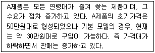
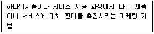
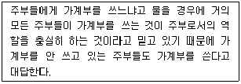
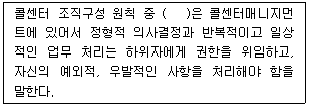
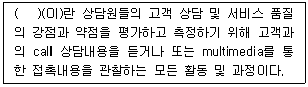
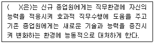

텔레마케팅관리사 (2017-03-05 기출문제)
1과목: 판매관리
1. 인바운드 텔레마케팅의 중요성에 대한 설명으로 가장 거리가 먼 것은?
- 거래마케팅에서 관계마케팅으로의 변화에 대응
- 기업 서비스 향상으로 고객요구에 대한 신속한 대응
- 광고, 경험, 구전 등에 의한 고객 기대가치의 대응
- 서비스 및 상품 이용고객의 만족여부의 정확한 확인
(정답률: 58%)

2. 어느 특정기업이 소비자의 마음속에 자사상품을 원하는 위치로 부각시키려는 노력은?
- 이미테이션
- 포지셔닝
- 시장의 표적화
- 독점시장화
(정답률: 88%)
3. 마케팅 정보시스템의 대표적인 4가지 구성요소에 해당하지 않는 것은?
- 기업광고 시스템
- 내부보고 시스템
- 마케팅조사 시스템
- 외부정보입수 시스템
(정답률: 37%)
4. 다음 중 고객충성도 형성에 영향을 미치는 요소와 가장 거리가 먼 것은?
- 구매횟수
- 구매방법
- 이용실적
- 이용기간
(정답률: 87%)
5. 광고효과의 측정 방법이 아닌 것은?
- 식별 측정
- 기억 측정
- 구매행위 측정
- 과업기중 측정
(정답률: 71%)
6. 여러 점포를 모두 특정지역에 집중하여 입지시키는 방법으로 대개 대형 상권이나 교통중심지를 대상으로 하는 마케팅 방법은?
- 니치마케팅
- 포화마케팅
- 프랜차이징
- 다경로 유통시스템
(정답률: 70%)
7. 잠재시장을 평가할 때 마케팅 관리자가 체크해야 할 사항으로 가장 거리가 먼 것은?
- 시장의 규모
- 시장의 위치
- 2차 자료 수집방법
- 시장세분화의 적합한 기준
(정답률: 77%)
8. 다음 중 고객생애가치와 가장 관계가 깊은 것은?
- Renewal(경신)
- CRM(고객관계관리)
- Up-Sale(고가 판매)
- Cross-Sale(교차 판매)
(정답률: 85%)
9. 다음은 제품의 어떤 가격정책을 설명하는 것인가?

- 가격 탄력성
- 시장침투 가격
- 명예 가격
- 초기 고가격
(정답률: 67%)
10. 아웃바운드 텔레마케팅의 활용분야와 예시로 옳지 않은 것은?
- 제품 및 서비스 상담 : 회원모집, 보험판매
- 계약갱신 : 카드갱신, 잡지 재구독, 보험 계약갱신
- 제품 반품 및 교환 상담 : 가전제품, 가구 등의 반품 및 교환 전화
- 교체구입 및 업그레이드 구입 권유
(정답률: 78%)
11. 제품의 가격 변화에 따른 소비자의 수요 변화나 공급추이에 관한 정도를 의미하는 것은?
- 가격대 성능비
- 가격 탄력성
- 가격 표시제
- 기회 비용
(정답률: 89%)
12. 아웃바운드 텔레마케팅을 활용하는 마케팅전략이라고 볼 수 없는 것은?
- 매스마케팅
- 다이렉트마케팅
- 데이터베이스마케팅
- 1 대 1 마케팅
(정답률: 79%)
13. 효율적인 인바운드 고객응대를 위해서 실시할 수 있는 방법이 아닌 것은?
- 콜센터의 설치운영
- 일률적인 성과급제
- 고객대응창구의 일원화
- 24시간 전화접수 체제 구축
(정답률: 72%)
14. 기업의 전략적 사업 단위를 분석하는데 이용되는 BCG매트릭스에서 시장점유율은 높으나, 시장성장률이 낮은 유형은?
- Star
- Cash Cow
- Dog
- Question
(정답률: 63%)
15. 제품의 수명주기를 순서대로 바르게 나열한 것은?
- 도입기→성숙기→성장기→포화기→쇠퇴기
- 도입기→성장기→포화기→쇠퇴기→성숙기
- 도입기→성장기→성숙기→포화기→쇠퇴기
- 도입기→성숙기→포화기→성장기→쇠퇴기
(정답률: 88%)
16. 주문접수 처리에 요구되는 사항과 가장 거리가 먼 것은?
- 고객번호, 전화번호 등 고객데이터의 정확한 작동과 관리가 이루어져야 한다.
- 고객의 기본이력을 통해 그 고객의 특성을 이해하여 신상정보 DB를 상업적으로 이용한다.
- 문의나 요구사항, 접수에 대해서는 전화를 받는 사람이 즉시 원스톱 중심으로 처리할 수 있어야 한다.
- 고객관리에서 가장 기초적인 고객정보 화면의 신규입력과 수정입력이 용이하게 이루어져야 한다.
(정답률: 77%)
17. 인바운드 고객상담의 개념과 가장 거리가 먼 것은?
- 보험권유는 전형적인 인바운드 텔레마케팅의 예이다.
- 수신자부담 전화도 일종의 인바운드 텔레마케팅이다.
- 고객이 먼저 주도하는 고객주도형 텔레마케팅이다.
- 인바운드 고객상담은 특히 서비스 마인드 자세가 강조되는 텔레커뮤니케이션이다.
(정답률: 83%)
18. 다음 설명에 해당하는 용어는?

- 리피팅
- 업 셀링
- 크로스 셀링
- 경쟁광고
(정답률: 84%)
19. 서비스의 특성과 설명이 잘 못 연결된 것은?
- 소멸성 : 서비스는 재고형태로 보존할 수 없다.
- 이질성 : 서비스는 표준화되기 어렵다.
- 유형성 : 서비스를 제공받기 전에는 서비스의 품질을 인식할 수 없다.
- 동시성 : 서비스는 제공자에 의해 제공되는 동시에 고객에 의해 소비된다.
(정답률: 72%)
20. 아웃바운드 판매전략의 과정으로 바르게 나열된 것은?
- 잠재고객 파악→잠재고객 특성 정의→스크리닝→판매→사후관리
- 잠재고객 파악→스크리닝→잠재고객 특성 정의→판매→사후관리
- 잠재고객 특성 정의→잠재고객 파악→스크리닝→판매→사후관리
- 잠재고객 특성 정의→스크리닝→잠재고객 파악→판매→사후관리
(정답률: 66%)
21. 마케팅 믹스에서 4P에 해당하지 않는 것은?
- 유통
- 고객
- 가격
- 제품
(정답률: 84%)
22. 인바운드 텔레마케팅의 업무가 아닌 것은?
- 문의 및 불만사항 대응
- 예금상담 서비스
- 해피콜 서비스
- 통신판매의 주문접수
(정답률: 80%)
23. 아웃바운드 텔레마케팅의 업무영역 중 고객니즈의 자극 영역은?
- 판매촉진
- 벤치마킹
- 시장조사
- 상담창구
(정답률: 69%)
24. 고객 데이터베이스 분석기법에 대한 설명으로 틀린 것은?
- 회귀분석 : 영향을 주는 변수와 영향을 받는 변수가 서로 선형관계가 있다고 가정하여 이루어지는 분석방법
- 판별분석 : 집단 간의 차이가 어떠한 변수에 의해 영향을 받는가를 분석하는 방법
- 군집분석 : 여러 대상들을 몇 개의 변수를 기초로 서로 비슷한 것끼리 묶어주는 분석방법
- RFM(Recency, Frequency & Monetary) : 제품에 대한 특성을 중심으로 분석하는 방법
(정답률: 72%)
25. 다음 시장세분화의 기준 중 행동분석적 변수에 해당하지 않는 것은?
- 가격민감도
- 브랜드선호도
- 소득
- 사용량
(정답률: 72%)
2과목: 시장조사
26. 탐색조사에 대한 설명으로 옳지 않은 것은?
- 탐색조사는 사전정보를 파악하기 위해 실시되는 조사이다.
- 연구가 충분히 되지 않은 분야의 연구수행에 적절하다.
- 탐색조사에서 편견이 개입되지 않아야 하고 통찰력, 독창력이 필요하다.
- 자료수집방법, 자료조사절차 등에 대한 사전계획이 명확한 조사방법이다.
(정답률: 46%)
27. 마케팅 조사 절차 중 조사계획 수립단계에 관한 사항으로 옳지 않은 것은?
- 데이터를 분석하고, 문제점에 대한 대안을 모색한다.
- 문제점을 파악하고 이를 해결할 수 있는 방향으로 조사목적을 설정한다.
- 필요한 정보를 얻기 위해 조사내용 전반에 대한 범위를 정한다.
- 사용가능한 조사 예산 등을 감안하여 합리적인 방법으로 조사 예산 계획을 수립한다.
(정답률: 55%)
28. 조사과정에서 조사원이 응답자에게 가장 영향을 많이 미칠 수 있는 조사방법은?
- 우편조사
- 인터넷조사
- ARS조사
- 면접조사
(정답률: 83%)
29. 의사소통방법에 의해 자료를 수집할 경우, 다음과 같은 사례의 문제점은?

- 응답자가 정보를 고의로 왜곡되게 제공하는 경우이다.
- 응답자가 자료를 제공할 능력이 없는 경우이다.
- 조사자가 필요로 하는 정보를 응답자가 기억하지 못하는 경우이다.
- 응답하는 방법을 모르는 경우이다.
(정답률: 82%)
30. 2차 자료 수집 시 고려해야 할 사항과 가장 거리가 먼 것은?
- 조사목적의 적합성
- 자료의 신뢰성
- 자료의 편견
- 자료의 편집
(정답률: 47%)
31. 다음 자료수집방법 중 응답 정보를 가장 빨리 얻을 수 있는 것은?
- 우편조사
- 전화조사
- 심층면접조사
- 대리질문조사
(정답률: 83%)
32. 조사의 유형에 대한 설명으로 적절하지 않은 것은?
- 전화조사 : 특정표본 추출에 한계가 있다.
- 우편조사 : 조사 대상을 다양하게 할 수 있다.
- 면접조사 : 다수의 면접원이 조사에 참여하기 때문에 조사결과의 객관성이 유지된다.
- 집단 설문조사 : 한 번에 많은 응답자의 반응을 얻을 수 있으므로 시간을 단축시킬 수 있다.
(정답률: 69%)
33. 설문지의 질문 유형 중 개방적 질문에 대한 특성으로 볼 수 없는 것은?
- 응답자가 생각나는 대로 어떤 형식 없이 응답할 수 있다.
- 응답자의 다양한 의견을 수렴할 수 있다.
- 응답자가 생각하기 귀찮을 경우 불성실하게 답을 할 수 있다.
- 조사자가 의도한 답을 얻기 쉽다.
(정답률: 78%)
34. 설문지의 대표적 구성요소에 해당되지 않는 것은?
- 식별자료
- 응답자에 대한 협조요청
- 응답자의 분류를 위한 자료
- 설문문항 요약자료
(정답률: 49%)
35. 모집단으로부터 이를 대표할 수 있는 부분을 선택하는 과정은?
- 가설의 설정
- 표본추출
- 설문지조사
- 실험조사
(정답률: 80%)
36. 조작적 정의에 대한 설명으로 가장 옳은 것은?
- 연구하고자 하는 문제를 진술하기 위한 구성개념을 정의하는 것이다.
- 구성개념을 측정 가능한 상태가 되도록 정의하는 것이다.
- 현상을 설명하는 구성개념을 정의하는 것이다.
- 분석대상에대한 통계적 방법을 정의하는 것이다.
(정답률: 56%)
37. 설문조사 전에 작성된 설문지를 테스트하는 목적 및 요령과 거리가 먼 것은?
- 설문문항의 타당성을 낮추기 위해 실시한다.
- 질문에 대한 이해도, 잘못된 표현, 응답항목의 누락 및 중복 등의 문제점을 검토한다.
- 응답에 걸리는 시간, 응답의 어려움, 측정도구의 신뢰도 검증에 대한 적절성을 평가하기 위해서 실시한다.
- 설문을 소량으로 만들어 조사대상이 될 모집단에서 표본을 일부 추출하여 조사한다.
(정답률: 79%)
38. 종단조사에 대한 설명이 옳은 것은?
- 시간 간격을 두고 반복적 조사를 통한 마케팅 변수에 대한 반응 측정
- 기온에 민감한 지역을 위도별로 분류하여 각 지역별로 선호되는 상품에 대한 반응요소 측정
- 소득수준에 따른 모집단을 분류하여 선호하거나 이용하는 상품을 가격대별, 상품군별로 분석한 자료
- 어떠한 시점에서의 소비자의 구매형태를 측정하여 시장의 전반적 상황을 조사
(정답률: 64%)
39. 우편조사의 응답률에 영향을 미치는 요인과 가장 거리가 먼 것은?
- 응답집단의 동질성
- 응답자의 지역적 범위
- 질문지의 양식 및 우송방법
- 조사주관기관 및 지원 단체의 성격
(정답률: 52%)
40. 넓은 의미로 문헌조사라고도 하며 각종 학술연구지, 상업잡지, 통계자료집 등과 같은 다양한 분야의 자료를 조사하는 방법은?
- 종단조사
- 횡단조사
- 1차 자료분석방법
- 2차 자료분석방법
(정답률: 65%)
41. 설문지의 응답내용을 컴퓨터 장치를 활용하여 통계처리하기 위해 숫자 등의 부호로 바꾸는 일을 수행하는 시장조사의 주체는?
- 조사자
- 코딩원
- 검증원
- 응답자
(정답률: 87%)
42. 다음 중 표본추출을 할 때 가장 먼저 해야 할 사항은?
- 모집단 규정
- 표본크기 확정
- 사전조사
- 표본특성 조사
(정답률: 65%)
43. 다음 중 수요를 예측할 때 사용될 수 있는 가장 효율적인 조사방법은?
- 문헌조사
- 소비자 욕구조사
- 인과조사
- 사례조사
(정답률: 70%)
44. 다음 질문 형태 중 자료처리를 위한 코딩에 어려움이 있는 것은?
- 자유응답형
- 다지선다형
- 양자택일형
- 가치개입형
(정답률: 78%)
45. 측정의 신뢰성을 향상시킬 수 있는 방법으로 옳지 않은 것은?
- 설문지의 문항별 설명을 명확히 하여 응답자별로 해석상의 차이가 발생하지 않도록 한다.
- 조사원들에 대한 교육을 강화하여 설문을 명확히 이해하도록 하고, 질문 방식 등을 표준화시킨다.
- 성의가 없거나 일관성 없게 답한 경우 설문지 자체를 폐기시킴으로써 위험요소를 없앤다.
- 중요한 질문의 경우 반복 질문을 피함으로써 혼선을 피한다.
(정답률: 55%)
46. 시장조사에 관한 설명으로 옳은 것은?
- 마케팅 관련자료를 체계적으로 수집, 기록, 처리, 분석하는 활동이다.
- 마케터들이 마케팅 활동 시 근거자료로 활용된다.
- 마케팅 활동의 목표와 목적이 된다.
- 과학적인 접근을 통하여 정확하고 신뢰할 수 있어야 한다.
(정답률: 37%)
47. 면접조사의 특성으로 볼 수 없는 것은?
- 설문지법에 비해 시간, 비용, 노력이 많이 든다.
- 다양한 질문을 사용할 수 있고, 정확한 응답을 얻어 낼 수 있다.
- 설문지법에 비해 응답자의 환경을 통제, 표준화 할 수 없다.
- 응답자의 과거 행동이나 사적 행위에 관한 정보를 얻을 수 있다.
(정답률: 59%)
48. 시장조사의 정의를 설명한 것으로 옳지 않는 것은?
- 시장조사는 매출과 이익을 증가시키도록 도와주는 기법들의 집합이다.
- 시장조사는 경쟁자들과의 매출과 시장점유율에 대한 정보를 수집하는 것이다.
- 시장조사는 소비자보다 제품을 공급하는 공급자의 욕구를 정확히 파악하는 것이다.
- 시장조사는 목표시장으로부터 자료들을 획득하는 것이다.
(정답률: 72%)
49. 인터넷 조사의 문제점이 아닌 것은?
- 응답자가 정말로 진실을 말하고 있는 것인지 아닌지를 구분하기가 매우 어렵다.
- 인센티브를 받기 위해서 또는 자신의 의견을 더욱 많이 반영하기 위해서 여러 번 응답할 수도 있다.
- 타 조사방식에 비해 응답률이 매우 낮다는 문제가 있다.
- 조사 주제에 대해 개인적으로 관심이 많은 사람들만이 응답을 하게 되는 자기 선택편향이 발생 할 수 있다.
(정답률: 77%)
50. 다음 척도에 대한 설명 중 옳은 것은?
- 명목척도는 절대적 크기를 비교한다.
- 서열척도는 조작적으로 정의된 특징이나 속성에 관해 순서대로 배열된 경우이다.
- 등간척도의 숫자 간의 간격은 특성의 간격과는 다르다.
- 비율척도는 등간척도와 같이 절대영점을 가지고 있다.
(정답률: 50%)
3과목: 텔레마케팅관리
51. 역할연기의 진행순서로 옳은 것은?(문제 복원 오류로 보기 내용이 정확하지 않습니다. 2, 3번 보기를 정확하게 아시는 분께서는 오류 신고를 통하여 내용 작성 부탁 드립니다. 정답은 3번입니다.)
- 상황설정→대상자 선정→반복 훈련 및 효과→체크 역할내용 검토 및 평가→스크립트 및 매뉴얼의 수정
- 대상자 선정→스크립트 및 매뉴얼의 수정→반복 훈련 및 효과상승 체크→역할내용검토 및 평가→상황 설정
- 대상자 선정→스크립트 및 매뉴얼의 수정→반복 훈련 및 효과상승 체크→역할내용 검토 및 평가→상황설정
- 상황 설정→대상자 선정→스크립트 및 매뉴얼의 수정→역할내용 검토 및 평가→반복 훈련 및 효과상승 체크
(정답률: 56%)
52. 콜센터 시스템 매니저의 역할로 적합하지 않은 것은?
- 콜센터 전반의 시스템을 관리하고, 시스템 업그레이드를 실시한다.
- 시스템의 장애를 예방하고 장애 시 신속히 복구하여야 한다.
- 보안에 대처하여 서비스 연속성을 관리하여야 한다.
- 콜센터 서비스 관리 지표에 대한 계획과 인력계획을 수립하여야 한다.
(정답률: 63%)
53. 변화적 리더십의 예로 볼 수 없는 것은?
- A는 어떤 장애물로 스스로의 능력으로 극복할 수 있다고 나를 신뢰한다.
- B는 내가 고민해온 고질적인 문제를 새로운 관점에서 생각해볼 수 있게 해 준다.
- C는 내가 필요한 경우 나를 코치해준다.
- D는 내가 실수를 저질렀을 때만 관여한다.
(정답률: 77%)
54. 리더십의 유형을 의사결정방식과 태도에 따라 구분할 때 태도에 따른 유형에 해당하는 것은?
- 민주형 리더십
- 독재형 리더십
- 자유방임형 리더십
- 인간관계 중심형 리더십
(정답률: 55%)
55. 콜센터의 생산성 지표에 대한 설명으로 틀린 것은?
- 상담사의 평균 통화 시간, 후처리 시간 등이 대표적인 생산성 지표이다.
- 생산성 지표는 상담사 투입에 따른 결과로 투입량과 산출량의 비율로 나타난다.
- 콜 생산성과 수익 관련 지표가 대표적이다.
- 고객 만족도 향상과 수익 증대가 목표이다.
(정답률: 35%)
56. 콜센터 정량적 평가 지표인 서비스 레벨에 대한 설명으로 틀린 것은?
- 전화응대 스크립트의 품질수준을 나타내는 지표이다.
- “X%의 콜을 Y시간내에 응대”와 같은 형식으로 표시한다.
- 고객들의 통화대기시간에 대한 평균적인 수준을 가장 잘 나타내 주는 지표이다.
- 인바운드 콜센터의 대표적인 관리지표 중 하나이다.
(정답률: 33%)
57. 리더십 이론에 관한 설명으로 옳은 것은?
- 특성이론에 의하면 리더는 리더십 행사에서 상황의 영향을 받을 수 있음을 제시한다.
- 피들러의 상황이론에서는 리더십의 상황요인으로 리더-구성원 관계, 과업구조, 리더의 직위권한을 제시하고 있다.
- 경로-목표 이론에서는 의사결정 상황에 따라 리더의 의사결정유형을 달리하는 의사결정나무를 제시하고 있다.
- 관리격자 이론에 의하면 중간관리자에게 가장 적절한 리더십 유형은 중간형(5,5)이다.
(정답률: 53%)
58. 인바운드 콜과 아웃바운드 콜을 혼용해서 처리하는 업무형태는?
- 포지셔닝
- 블랜딩
- 콜 라우팅
- 모니터링
(정답률: 72%)
59. 텔레마케팅의 성장 배경에 관한 설명 중 '신용카드의 보급으로 고객 정보의 취득과 수요 창출의 효과'를 고려한 측면은?
- 기술적 측면
- 사회적 측면
- 소비자 측면
- 생산자 측면
(정답률: 45%)
60. 다음 ( )에 알맞은 용어는?

- 예외의 원칙
- 전문화의 원칙
- 명령일원화의 원칙
- 책임과 권한의 원칙
(정답률: 43%)
61. 콜센터 조직의 인력계획 활동에 대한 설명으로 가장 적절하지 않은 것은?
- 인사부문에 대한 계획 활동은 인력확보계획, 인력개발계획, 인력보상계획, 인력유지계획, 인력방출계획을 포함한다.
- 인력배치계획은 고객지향적으로 구성하기보다 회사 내부의 관리지향적으로 구성해야 한다.
- 기존인력의 기술목록에는 기술과 경험, 능력정보, 교육훈련, 인적사항 등이 포함된다.
- 인력개발에 관한 계획활동에는 상담원의 현재 및 잠재능력의 측정과 상담원의 개발욕구분석, 경력욕구분석을 포함한다.
(정답률: 76%)
62. 텔레마케팅의 구성요소에 해당하지 않은 것은?
- 고객(Custmer)
- 스크립트(Script)
- 콜센터(Call center)
- 데이터베이스(Database)
(정답률: 66%)
63. 텔레마케팅을 적용하기에 적합하지 않은 것은?
- 유권자
- 신시장 개척
- 제품 생산기술
- 신상품에 대한 관심도 조사
(정답률: 71%)
64. 통화품질과 텔레마케팅 모니터링의 차이점에 대한 설명으로 틀린 것은?
- 통화품질은 종합적 평가체제이고, 텔레마케팅모니터링은 상담원과 고객 간의 통화자체에서 느껴지는 상담의 질 정도를 평가한다.
- 통화품질은 콜센터의 종합품질과 경쟁력을 동시에 평가하며, 텔레마케팅 모니터링은 콜센터 자체의 커뮤니케이션 능력의 정도를 평가한다.
- 통화품질은 주로 상담원 개개인의 전문능력을 평가하며, 텔레마케팅 모니터링은 인바운드, 아웃바운드 톨, 동시 통화량의 처리능력 등을 종합적으로 평가한다.
- 통화품질의 궁극적인 목적은 콜센터 경영의 질을 향상시키는 것이며, 텔레마케팅모니터링의 궁극적인 목적은 상담원의 상담의 질을 향상시키는 것이다.
(정답률: 45%)
65. 텔레마케터의 역할로서 옳지 않은 것은?
- 텔레마케터는 기업의 이미지 향상을 위해 노력해야 한다.
- 상담을 통해 기록된 고객반응결과를 분석하여 경영정보를 제공한다.
- 텔레마케터는 회사의 업무나 제품에 대해 적극적으로 홍보하여야 한다.
- 고객의 특수한 요구나 고충 등은 관리자와의 협의를 통해 최선의 해결안을 모색해야 한다.
(정답률: 52%)
66. 텔레마케팅에 대한 설명으로 옳지 않은 것은?
- 정보통신 기술을 활용한다.
- 시간을 효과적으로 관리하기가 어렵다.
- 훈련받은 인적자원에 의해 이루어진다.
- 기업의 마케팅 활동에 다양하게 사용될 수 있다.
(정답률: 81%)
67. 최근 인사고과의 경향에 해당되지 않는 것은?
- 임금관리 중심의 고과에서 능력개발 중심으로 변화
- 연공서열 중심의 고과에서 성과 중심의 고과로 변화
- 목적별 고과에서 만능형 고과로 변화
- 상위자 주체의 고과에서 종업원 참가의 고과로 변화
(정답률: 60%)
68. 인바운드 콜센터의 운영 성과측정지표에 관한 설명으로 옳지 않은 것은?
- 품질평가는 “목표 서비스 기간 내에 총 인입된 콜의 몇 %를 응답했는가?”를 측정하는 항목이다.
- CPH(Call Per Hour)는 “텔레마케터가 시간당 인입콜을 얼마나 많이 처리하였는가?”를 측정하는 항목이다.
- 스케줄 고수율은 (콜 처리시간+콜 처리준비가 되어 있는 시간)/업무를 하도록 스케줄된 시간을 측정하는 항목이다.
- 고객 만족도는 고객이 콜센터에 대해 느끼는 만족도를 측정하는 항목이다.
(정답률: 68%)
69. 상담원의 이직원인을 파악하기 위한 방법으로 가장 거리가 먼 것은?
- 360도 다면평가 실시
- 상담사와 개별 미팅 수행
- 기존 이직 관련 인터뷰 분석
- 시장상황과 비교하여 직무 및 급여 수준 파악
(정답률: 53%)
70. 인바운드 콜처리 품질에 직접적인 여향을 미치는 요소가 아닌 것은?
- 콜센터 위치
- 콜처리 평균시간 수준
- 콜상담 인력 투입 정도
- 콜처리 시스템 접근 수준
(정답률: 81%)
71. 다음 ( )에 알맞은 용어는?

- 코칭
- 스크립트
- 벤치마킹
- QA(Quality Assurance)활동
(정답률: 65%)
72. 다음 ( )에 들어갈 알맞은 용어는?

- 인사이동
- 보상관리
- 교육훈련
- 경력개발
(정답률: 80%)
73. 인적자원개발을 위한 교육훈련 절차를 나타낸 것으로 옳은 것은?
- 목표설정→직무분석→교육시행→성과평가→보상과 개선
- 목표설정→교육시행→직무분석→성과평가→보상과 개선
- 직무분석→목표설정→성과평가→교육시행→보상과 개선
- 직무분석→목표설정→교육시행→성과평가→보상과 개선
(정답률: 54%)
74. 통화품질에 대한 설명으로 가장 거리가 먼 것은?
- 통화품질이란 기업과 고객 간에 이루어지는 통화에서 느껴지는 품질의 정도를 말한다.
- 하드웨어적인 품질과 소프트웨어적인 품질로 구분할 수 있다.
- 콜센터의 통화에 대한 종합적인 품질의 정도를 말한다.
- 불만고객과의 의사소통 수단으로 사용하는 DM 활동이다.
(정답률: 69%)
75. 스크립트를 작성하는 목적으로 틀린 것은?
- 텔레마케터가 주관적으로 상담하기 위해서 작성한다.
- 상담원의 능력과 수준을 일정수준 이상으로 유지시켜 준다.
- 통화의 목적과 어떻게 대화를 이끌어 갈 것인가의 방향을 잡아준다.
- 균등한 대화를 사용하여 정확한 효과를 측정하고 효율적인 운영체제를 구축한다.
(정답률: 76%)
4과목: 고객응대
76. 듣기와 말하기에 대한 설명으로 옳지 않은 것은?
- 다른 사람들이 전하는 메시지를 집중하여 듣는 것은 hearing이라고 한다.
- 사람들은 듣기보다 말하기를 선호하는 경향이 있다.
- 효과적인 듣기를 위해서는 성급한 결론과 평가는 금물이다.
- 동의할 수 있는 메시지의 부분을 찾아서 신중히 들은 후 상대방을 격려한다.
(정답률: 47%)
77. 상담대화모델에서 대화 진행 중 상담원과 고객이 주고받는 메시지에 포함되지 않는 것은?
- 성과
- 정보
- 감정
- 태도
(정답률: 76%)
78. FAQ(Frequently Asked Question) 작성 시 유의해야 할 점이 아닌 것은?
- FAQ는 전문적이고 고도화된 답변만을 엄선하여 올린다.
- FAQ는 반복적이고 잦은 질의응답에 대해서 답변하는 응답코너를 제시한다.
- FAQ는 고객이 쉽게 이해할 수 있도록 분류하여 제시하면 더욱 효과적이다.
- FAQ는 적절한 질문, 부적절한 질문 등의 검증을 거쳐 등록한다.
(정답률: 77%)
79. 다음 중 CRM 마케팅전략으로 가장 거리가 먼 것은?
- 통합적 마케팅 커뮤니케이션 전개
- 고객 맞춤형 커뮤니케이션으로 변화
- 고객지향적 마케팅으로 변화
- 매스미디어 마케팅 활동 중시
(정답률: 86%)
80. 고객가치를 측정하기 위한 데이터 마이닝 기법 중 기술모형 기법에 해당하지 않은 것은?
- 의사결정나무 분석
- 장바구니 분석
- 계층적 군집 분석
- 순차적 패턴 분석
(정답률: 30%)
81. 상담원이 갖추어야 할 용모와 복장의 기준으로 적합하지 않은 것은?
- 깔끔하고 단정한 용모, 복장을 갖춘다.
- 내적이미지와 외적이미지의 균형과 조화를 위해 노력한다.
- 자신의 인격과 근무하는 기업의 이미지를 고려한다.
- 목소리를 주로 사용하는 업무이므로 복장은 신경 쓸 필요가 없다.
(정답률: 85%)
82. CRM의 목적은 고객의 이익 극대화와 이를 통해 기업의 수익성을 극대화하는 것이다. 다음 중 CRM의 목적 달성을 위한 특성이 아닌 것은?
- 목표시장과 목표고객에 대한 고객관계의 집중화에 노력한다.
- 고객과 관계를 유지하는 것보다는 다양한 상품 및 할인정책을 제시하여 보다 더 많은 고객을 획득하는 것을 주목적으로 한다.
- 고객에 대한 이해와 반응을 분석하고, 고객의 욕구를 파악하여 고객이 원하는 상품을 만든다.
- 기존고객 및 잠재고객을 위한 마케팅전략을 통해 고객 점유율을 높이는 전략이 필요하다.
(정답률: 82%)
83. 안정형 고객의 행동경향에 대한 설명으로 옳지 않은 것은?
- 대체적으로 인내심이 강하다.
- 자신의 의견을 말하기 보다는 듣고자 한다.
- 상품 구매 결정이 신속히 이루어진다.
- 질문에 대한 답변이 바로 나오지 않는다.
(정답률: 62%)
84. 의사소통에 대한 설명으로 틀린 것은?
- 의사소통의 방법에는 언어적 방법과 비언어적 방법이 있다.
- 특정대상에게 구체적인 정보나 감정을 전달하는 것이다.
- 욕구 충족을 위한 인간의 행동이다.
- 의사전달→감정이입→정보교환의 순으로 나타난다.
(정답률: 61%)
85. 구매 후 고객관리에 관한 설명으로 틀린 것은?
- 고객이 구입한 제품이나 서비스를 사용하는 과정 혹은 배달 및 운송에서 발생한 문제등에 대해 효과적이고 전문적인 상담을 수행한다.
- 고객이 구입한 제품의 결함, 정신적 또는 물질적 피해에 대한 보상을 요구했을 때 이미 판매한 이후의 일이므로 고객의 요구를 무마시킨다.
- 고객들로부터 제품이나 서비스의 성능, 재질, 가격, 배송, 사후관리 등에 대한 만족도와 상담의 질에 대한 만족도를 측정•관리한다.
- 고객의 정기적 또는 비정기적 온•오프라인상의 모니터링 참여를 유도하여 이를 마케팅정책이나 상담관리에 반영한다.
(정답률: 84%)
86. 마케팅 커뮤니케이션 분류에 속하지 않는 것은?
- 광고 커뮤니케이션
- 인적판매 커뮤니케이션
- 감성 커뮤티케이션
- PR과 퍼블리시티
(정답률: 49%)
87. 화난 소비자에 대한 상담기법으로 틀린 것은?
- 선입견으로 응대한다던지 사무적으로 처리하면 반드시 반발을 사게 되므로 유의한다.
- 화난 소비자가 수고스럽지 않게 상담원이 모든 과정을 일괄적으로 처리한다.
- 고객의 감정을 상하게 하지 않도록 불만내용을 끝까지 참고 듣는다.
- 진실을 확인하고 변명하지 않으며 불만사항에 대하여 정중히 사고한다.
(정답률: 79%)
88. CRM 성공전략 중 시스템 통합수준의 성공요인이 아닌 것은?
- 후방조직 영역 활동의 종합적 관리
- 전방조직 영역의 CRM활동의 자동화
- 조직 내 다른 정보 시스템과의 개별화
- 고객중심 업무처리절차 확립
(정답률: 67%)
89. 다음 중 인바운드 상담의 도입부분에 해당하지 않는 것은?
- 니즈파악
- 첫인사
- 고객확인
- 자기소개
(정답률: 64%)
90. 다음 스크립트에 관한 설명 중 가장 적합하지 않은 것은?
- 잠재고객 또는 고객과 통화를 할 때 사용하는 대본과 같은 것으로써 고객과의 원활한 대화를 돕는다.
- 스크립트는 통화 목적과 방향 설정이 명확해야 하고 효과적인 통화시간을 관리할 수 있다.
- 다양한 고객을 접하게 됨에 따라 스크립트는 지속적인 보완을 해야 한다.
- 효과적인 통화를 위해 반드시 상담원은 스크립트에 명시되어 있는 대로만 고객응대를 해야 한다.
(정답률: 81%)
91. 경어법에 대한 설명으로 옳지 않은 것은?
- 텔레마케터의 말은 그의 인격과 회사의 품격을 나타내므로 품위 있는 표현을 하도록 습관화한다.
- 합쇼체(높임말씨)와 해요체(반 높임말씨)의 비율을 4:6으로 하는 것이 적당하다.
- 경어에는 상대를 높이는 존경어와 자신을 상대방보다 낮추어 간접적으로 상대방을 높이는 겸양어가 있다.
- 사물존칭은 고객에게 거부감을 주 수 있어 주의가 필요하다.
(정답률: 67%)
92. 조직 측면에서의 CRM 성공요인에 해당되지 않는 것은?
- 최고경영자의 관심과 지원
- 고객 및 정보 지향적 기업문화
- 전문 인력 확보
- 데이터 통합수준
(정답률: 38%)
93. 의사소통 방법 중 언어적인 메시지에 해당되지 않는 것은?
- 말
- 편지
- 메일
- 음성의 억양
(정답률: 67%)
94. 불만고객의 상담원칙이 아닌 것은?
- 불만의 정도나 깊이를 파악한다.
- 회사의 규정과 기준에 대해 우선 설명한다.
- 상담원의 개인감정을 표출하지 않는다.
- 고객의 가치관을 바꾸려고 하지 않는다.
(정답률: 74%)
95. 마케팅 커뮤티케이션의 변화 트렌드로 옳지 않은 것은?
- 시장이 세분화 되어가고 있다.
- 상품이나 서비스에 대한 차별화된 광고메시지를 선별하는 것이 필요하다.
- 불특정 다수에게 광고하는 매스마케팅을 확대한다.
- 고객관의 장기적 관점에서의 통합적 마케팅커뮤니케이션이 필요하다.
(정답률: 81%)
96. 효과적인 커뮤니케이션을 위한 방안으로 볼 수 없는 것은?
- 방어적 커뮤니케이션
- 메시지 전달자의감정이입 커뮤니케이션
- 메시지 수신자의 적극적 경청
- 수신자 중심의 정서적 화법 사용
(정답률: 68%)
97. 커뮤니케이션 채널에 대한 설명으로 틀린 것은?
- 커뮤티케이션 채널은 발신자가 수신자에게 메시지를 전달하는데 사용되는 수단을 말한다.
- 커뮤티케이션 채널은 크게 인적 채널과 비인적 채널로 나누어진다.
- 인적 채널은 발신자와 수신자 사이의 직접적인 접촉을 통한 커뮤니케이션 방법으로 대중매체와 인터넷과 같은 다이렉트 마케팅 도구들이 포함된다.
- 비인적 채널은 발신자와 수신자 사이의 직접적인 접촉 없이 메시지가 전달되는 방법으로 인쇄매체. 방송매체 등이 포함된다.
(정답률: 61%)
98. CRM에서 고객이 기업에게 기대하는 관계 구축의 요소로 볼 수 없는 것은?
- 상호간의 신뢰
- 공정한 대우
- 단기적인 관계
- 열린 대화 창구
(정답률: 78%)
99. 전화 상담에서 필요한 말하기 기법에 관한 설명으로 틀린 것은?
- 전화로 이야기할 때에도 미소를 지으며, 중요한 단어를 강조하여 말한다.
- 어조를 과장하여 억양에 변화를 주는 것은 소비자의 집중력을 약화시키므로 바람직하지 않다.
- 소비자가 말하는 속도에 보조를 맞추되, 상담원은 되도록 천천히 말하는 습관을 갖는 것이 좋다.
- 명확한 발음을 하기 위해 큰소리로 반복해서 연습하는 것이 필요하다.
(정답률: 65%)
100. 텔레마케팅을 통한 고객관리의 특징이 아닌 것은?
- 고객과 상담원 간의 쌍방향커뮤티케이션이다.
- 전화장치를 활용한 비대면 중심의 커뮤니케이션이다.
- 텔레마케팅에서는 비언어적인 메시지를 사용하지 않는다.
- 고객상황에 맞추어 융통성 있는 커뮤니케이션이 가능하다.
(정답률: 80%)